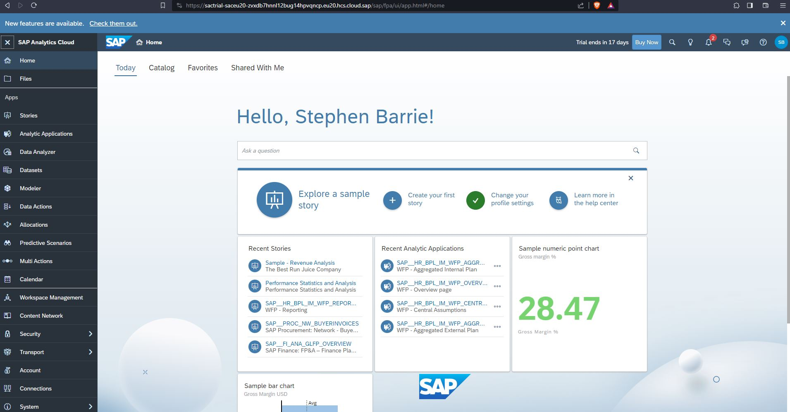
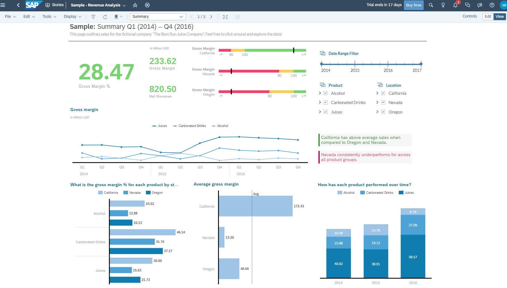
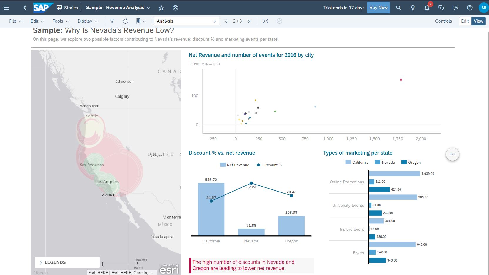
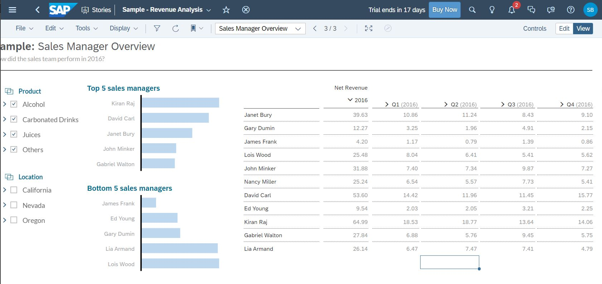
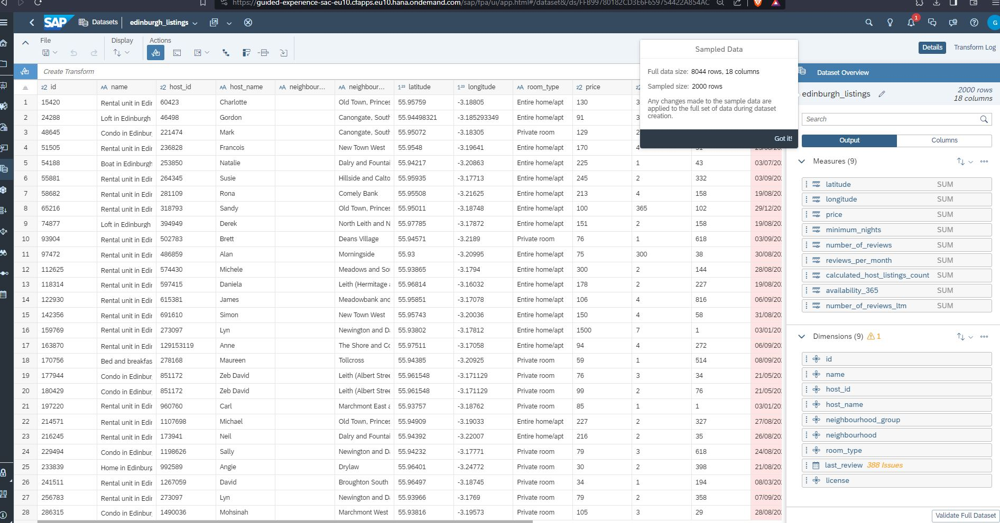
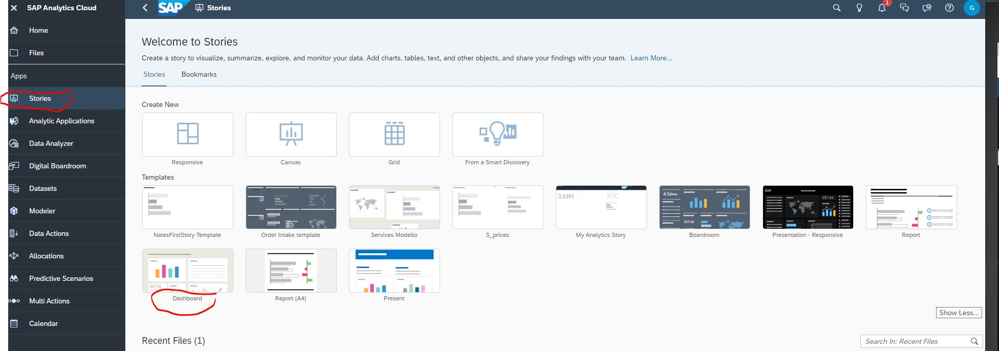
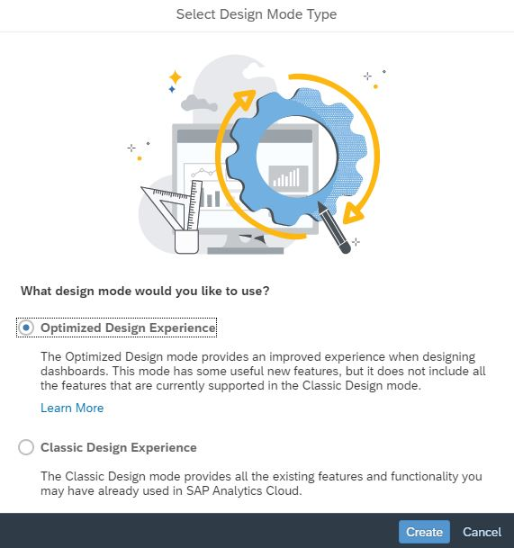
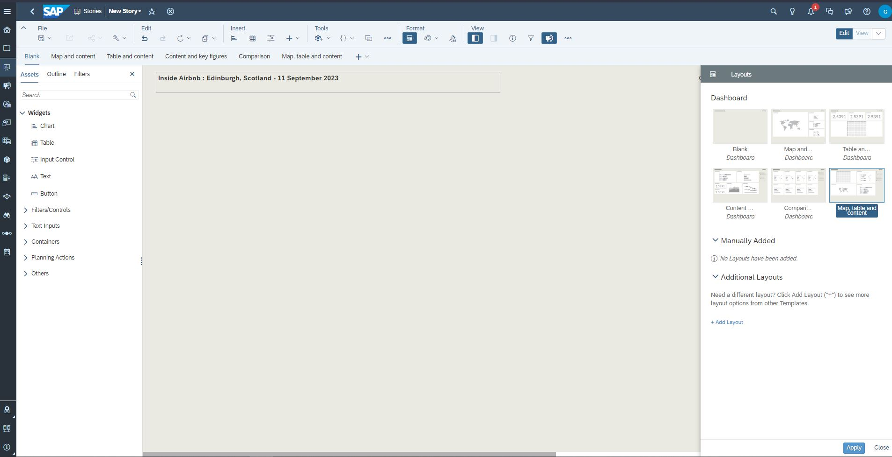
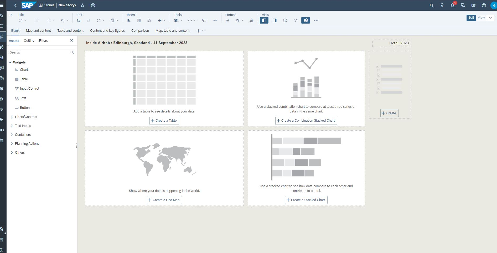

SAP Analytics Cloud (or SAP Cloud for Analytics) is a software as a service (SaaS business intelligence (BI) platform designed by SAP. Analytics Cloud is made specifically with the intent of providing all analytics capabilities to all users in one product.
SAP Analytics Cloud evolved out of the SAP Cloud for Planning product, which was released in February 2015. In addition to business planning, the other key components are BI (for reporting, Dashboarding, data-discovery and visualization), predictive analytics and governance, risk, and compliance (GRC). The BI functions released in November 2015 and the predictive capabilities were added at a later date.
Built natively on SAP HANA Cloud Platform (HCP), SAP Analytics Cloud allows data analysts and business decision makers to visualize, plan and make predictions all from one secure, cloud-based environment. SAP claims this differs from other BI platforms, which often require data to be integrated from various sources and users to jump between different applications when performing tasks, such as creating reports. With all the data sources and analytics functions in one product, Analytics Cloud users can work more efficiently, according to SAP. The key functions are accessed from the same user interface that is designed for ease-of-use for business users.
Understanding SAP
How do you pronounce SAP?
People often ask, “How do you say SAP?” It is an initialism, not an acronym, therefore, it is pronounced as individual letters (S-A-P). SAP is not pronounced as a word (“sap”).
What does SAP stand for? (What is SAP full form?)
The name is an initialism of the company’s original German name: Systemanalyse Programmentwicklung, which translates to System Analysis Program Development. Today the company’s legal corporate name is SAP SE — SE stands for societas Europaea, a public company registered in accordance with the European Union corporate law.
What is SAP software used for?
Traditional business models often decentralize data management, with each business function storing its own operational data in a separate database. This makes it difficult for employees from different business functions to access each other’s information. Furthermore, duplication of data across multiple departments increases IT storage costs and the risk of data errors.
By centralizing data management, SAP software provides multiple business functions with a single view of the truth. This helps companies better manage complex business processes by giving employees of different departments easy access to real-time insights across the enterprise. As a result, businesses can accelerate workflows, improve operational efficiency, raise productivity, enhance customer experiences – and ultimately increase profits.
What is ERP software?
ERP stands for “enterprise resource planning.” ERP software includes programs for all core business areas, such as procurement, production, materials management, sales, marketing, finance, and human resources (HR).
SAP was one of the first companies to develop standard software for business solutions and continues to offer industry-leading ERP solutions.
30 day free trial period

Explore a sample story



Adding data
http://data.insideairbnb.com/united-kingdom/scotland/edinburgh/2023-09-11/visualisations/listings.csv

Stories



